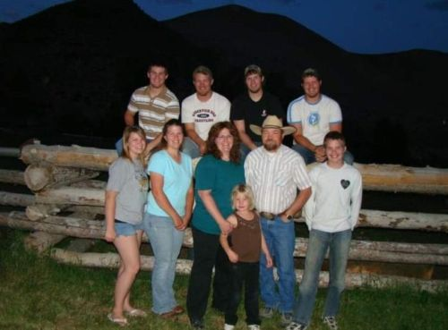
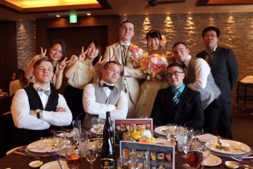
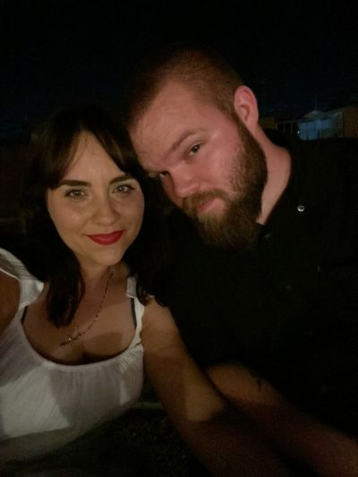
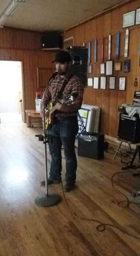

I was born in Sunvalley, Idaho in October of 1996. From there, I was taken to our family ranch in the Phasimeroi Valley in the center of Idaho. The ranch was about 1300 acres in size and consisted of multiple hay fields, a large pasture, corrals, and a calving barn. A calving barn is simply a small barn used to help cows give birth to new calves. Living on a ranch that size involved a lot of playing outside and a lot of work. I learned how to drive a stick shift truck by the time I was 7 years old. Before that, my dad would put his Dodge Cummins truck in 4-Low and let it crawl through the pasture while I steered and he threw hay to the cows from the bed. Eventually I learned to work the clutch and shifter and was able to drive the truck around the ranch whenever he needed me to. The town I lived in was called May and my family was half the population of that small town. I was fortunate to grow up the way I did. I learned the value of hard work and effort. My dad taught me traditional values that live inside of me to this day. My mom says me and my siblings were 'feral' children because we had a lack of supervision at the ranch, but fortunately all 8 of us made it out alive, but not without a few scars. At the age of 9 I had an unfortunate run-in with a door, that is my sister kicked it and the handle pinched my finger against a concrete wall, and the top part of my right ring finger was cut off. I also have scars from dog attacks, cat attacks, and even hitting my head against a rock a time or two. When I was 11 years old, we sold that house and the land because of my dad's health concerns. He was type-1 diabetic and was degrading in his health fairly quickly. We moved to Challis, Idaho which was an hour and a half from the original ranch, but put us within 15 minutes of my Grandparents, my Dad's mother and father. From that point on I was raised on a 90 acre ranch. I spent my spare time in all levels of school wrestling. Once I reached Middle School I added football to my list of activities. I even attempted to run track at the end of my sophomore year, but a combination of oversized cleats and a teammate that couldn't seem to put the baton into my hand properly resulted in a tumble that left my shoulder dislocated with a torn tendon that would require surgery. None the less I went on to play football just a few months later. I was a varsity football player and varsity wrestler for the entirety of my high school career and never attempted any other sports after my track running incident. That leads me to graduation. I wasn't the most academically proficient student, but I graduated either way and went on to the next phase of my life. After graduation I joined the Marine Corps and served for 2 1/2 years before being discharged due to an injury I sustained in Japan. I then worked as an underground miner in Challis, ID for a year, sold Kirby vacuums, and worked security at a casino.

For the last 5 years I dedicated my career to the Arizona Department of Corrections. I spent 7 weeks in a training academy for the Department of Corrections where I learned how to be a Correctional Officer. Once I completed the academy I was assigned to the Lewis Complex. I spent 5 months working at the Barchey unit which is a medium custody protective custody unit. I was then transferred to the Yuma complex. I served at the Yuma complex for the next 4 1/2 years. While there I was able to work at every custody level available at the complex. I credit both the Marine Corps and my upbringing for my ability to adapt and put in my best effort. I started attending college again during this time and completed my Associate's in Computer Science at the end of 2024. I then enrolled with Grand Canyon University for Software Development. This is where I am currently studying. In 2024 I received a call that my dad, who has battled severe health issues his whole life, was in the ICU in Salt Lake City. I drove the 10 hours to Salt Lake City on my own because my wife was attending my daughter's end of the year ballet recital. While driving, I decided a prayer would be the best thing I could do at that time. In my lengthy prayer I told God that if He would be willing to preserve my Dad's life long enough for me to see him one more time I would be greatful, but I also told God that if He decided to take him before I got there I would still be greatful because my Dad would no longer be in pain. Fast forward a few hours, I was only 10 minutes away from the hospital when my brother called with a shaky voice and told me that my Dad had passed away. I had never felt that kind of desperate pain before. I began yelling and cursing, blaming God for not preserving his life for 10 more minutes and wait for me to get there. After a minute I remembered my prayer and apologized to God for my outburst, but I couldn't get rid of the desperate pain that I felt. My eyes were blurry and my mind was racing. I was afraid that I was going to crash my car driving 75 miles per hour down the freeway. I prayed again that God would calm me so I could arrive to the hospital safely. Immediately I was calm and focused. I then heard a voice in my head that told me I would see my Dad before he died. It's only later that I realized it was the voice of God that told me I would see my Dad. Within a minute of hearing that voice tell me I would see my dad once more before his death, my brother called me again. He said, "I don't know why or how, but Dad is alive." He continued to explain that as they were mourning over my Dad's body, he stabilized. As my brother hung up the phone after telling me to drive safe, I felt a loving holy presence unlike any I have ever felt before. I began to weep with joy as I felt God wrap his arms around me in love. I was blessed to be able to spend a day and half with my Dad before God called him home. We buried my Dad on my Grandpa's ranch and spent time celebrating the great life that he lived. A few months later my second son was born. This was a joyous and concerning time. My youngest son, as we learned shortly later, was born with a very rare genetic mutation that causes an overgrowth in several limbs and in his brain. He is prone to seizures and has severe developmental delays. It has been a long process in taking care of him, but I know that God has blessed us with the life of that young boy. We will continue having faith and trusting in God as we continue forward in this life.

